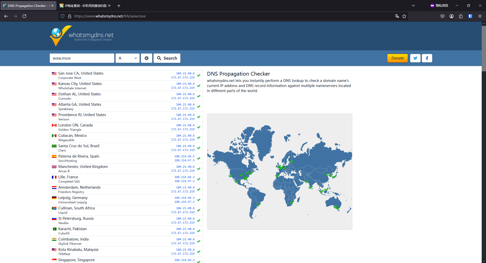
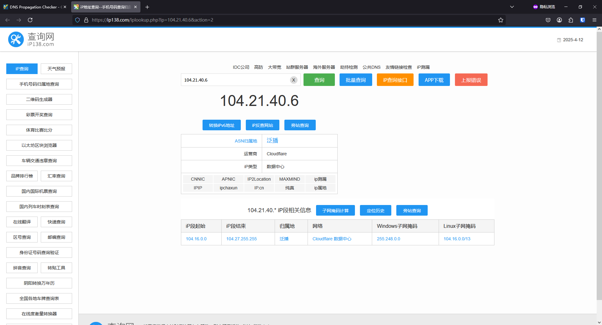
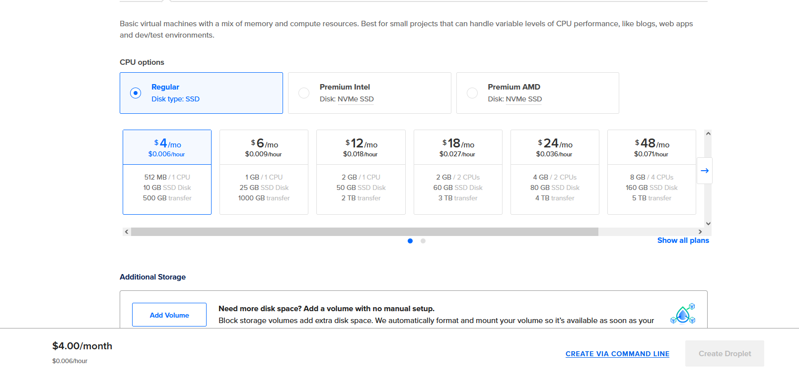
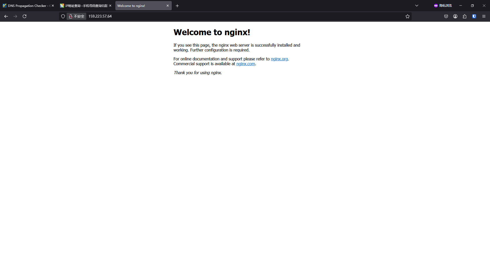
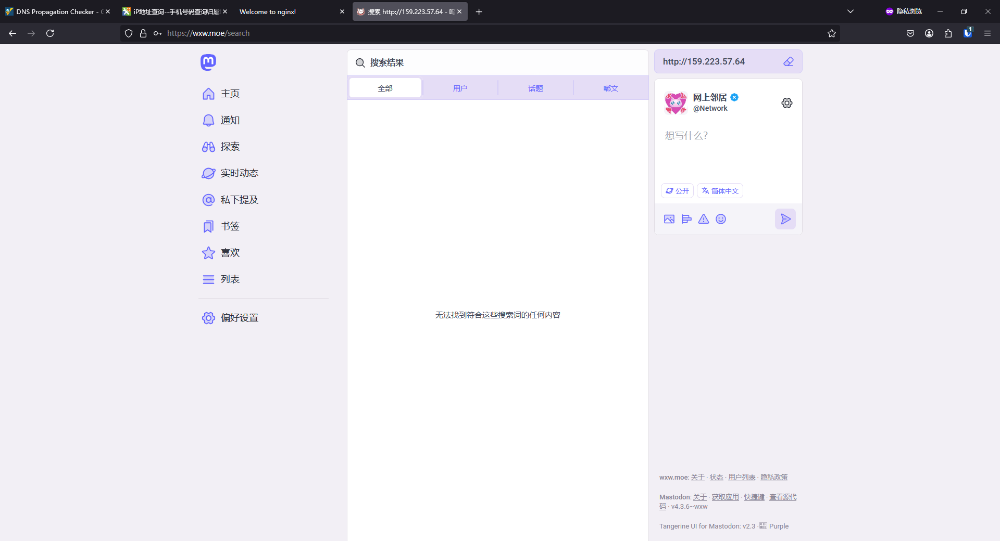

此类型的文章我不是第一个发的，之前已经有象友发了一篇使用 Cloudflare WARP 保护 Mastodon 源站。但是为了方便我下次使用这项技术，而且我的方法又跟他不一样，所以我又写了一篇这个博客。
绝对不是为了凑文章数量申请开往啊🥺这篇文章已经拖了2个月了才发。主要原因还是沉迷游戏。
通过查询nginx日志来找源站真实IP，是我找笨蛋冰告诉他的。fofa找不到他的源站，但是跟他实例有联合的站长都可以找到。
我并不急于去修复这个问题，也认为各位读者没有必要担心，因为仅仅暴露源站IP导致的风险，只有用ping的DDOS。绕过CloudFlare对我进行CC攻击是不可能的，因为我设置了ufw，拒绝一切非CloudFlare的IP访问。防注入防渗透也不该用这个手段来获取虚假的安全感。如果发生了DDOS攻击，那么我只要迁移实例或更换IP就行了，而攻击者则要花钱租用VPS或者肉鸡来进行攻击，很显然是不划算的。
我用这项技术，是因为VPS打折了，打折后的VPS按年付费，这样我好每月省1美元😀。如果我这一年的IP被盯上了，那么换IP就有点不太划算了。所以给它套个Warp，以后发生什么万一，好省一点。
如果是规模较大的实例，可能会导致实例的出口流量阻塞，影响对外联合、邮件收发，造成我无法预料的问题。
面向的读者
写这文章主要是给自己看的，今后如果需要迁移实例，或是有什么触类旁通的操作，以供参考。对新手友好的文章，以后我会写一些保姆级教程。
需要的基础知识
会使用systemctl，会修改systemd目录下的文件。使程序在Linux系统下后台运行、开机启动。
前提条件
最低配置
需拥有长毛象实例，作为管理员，至少要有服务器root权限。
推荐配置
你有root权限也最好不要乱改朋友的实例。最好是实例网站创始人。
原理简述
隐藏长毛象实例的IP，首先要了解它的原理。根据官方文档，长毛象有2个进程负责对外通信，一个是mastodon-web，另一个是mastodon-sidekiq。
用户（你和你的实例用户）通过客户端和网页端访问你的实例，是通过443端口访问了服务器的nginx，从而访问了mastodon-web进程。这个进程的IP保护，可以通过配置CDN来实现。CloudFlare的教程请另行搜索，或者等我以后出个保姆级教程。简单来说，就是把你的域名托管到CloudFlare，再解析到你的IP地址，并且设置为“已代理”。这样每次客人通过域名访问你站，都会解析到CloudFlare的服务器，Cloudflare再通过IP和主机名访问你站的443端口。
其他实例和中继站对你进行访问，拉取你站嘟文，推送嘟文到你站，也是通过你的mastodon-web进程。还是走你的CDN来访问。
当你站访问其他实例和中继站时，通过mastodon-sidekiq进程。CDN保护你站的唯一盲点就是，你站访问其他实例和中继，主动推送和拉取内容时，报文的源IP就是你的真实IP。一般不是站长（且不是拥有root权限的实例管理员）的黑客，而且没在你站注册账号的前提下，无法被你站通过mastodon-sidekiq访问。
所以不用怀疑别人是通过这个方式黑你实例，即使是，他也跑不掉。😎
验证方式（渗透测试）
前面介绍了原理，那么，你验证一个实例是否成功开启了正向代理，或者欲取得源站IP，是不是要自己另外开一个皮包实例（中继站）呢？
非也，非也。新建实例需要解析一个新的域名，整台服务器都要装一个新的。还要特地去开一个对象存储的桶，甚至还要申请一个邮箱的smtp接口，这么一套下来，至少就要好几天。其实最简单的办法就是开一个VPS，只要公网IP，不需要域名。在家的电脑不可以，靠端口转发的话，是很难获取源IP的。
找一个使用Cloudflare的实例，以wxw.moe实例为例进行演示：
已知，该实例使用了CloudFlare


开一个最便宜的低配VPS
登录VPS
安装nginx
1 | apt update && apt install nginx |
安装成功后如图所示

登录wxw.moe，搜索栏键入我的IP地址
查看nginx日志
1 | cd /var/log/nginx |
发现
1 | 103.172.41.35 - - [12/Apr/2025:10:34:16 +0000] "GET / HTTP/1.1" 200 409 "-" "Mastodon/4.3.6~wxw (http.rb/5.2.0; +https://wxw.moe/)" |
就找到了网站的位置
修改hosts后还发现该站真实网址确实如此，可以CC
代理配置方法
方案原理如同Canal项目
首先安装Cloudflare WARP，安装完成后可以通过http代理本机TCP 40000端口使用Cloudflare WARP
安装Cloudflare WARP
参考文献
https://developers.cloudflare.com/warp-client/get-started/linux/
https://pkg.cloudflareclient.com/
- 添加密钥
1 | curl -fsSL https://pkg.cloudflareclient.com/pubkey.gpg | sudo gpg --yes --dearmor --output /usr/share/keyrings/cloudflare-warp-archive-keyring.gpg |
- 添加Cloudflare软件源
1 | echo "deb [signed-by=/usr/share/keyrings/cloudflare-warp-archive-keyring.gpg] https://pkg.cloudflareclient.com/ $(lsb_release -cs) main" | sudo tee /etc/apt/sources.list.d/cloudflare-client.list |
- 安装Cloudflare WARP
1 | sudo apt-get update && sudo apt-get install cloudflare-warp |
- 注册客户端
1 | warp-cli registration new |
- 设置模式
这一操作非常重要！！！如果直接以warp-cli mode warp模式连接的话，会导致服务器的ssh服务掉线！
建议安装之前先进行服务器快照，如果没进行快照，请务必确认VNC或救援模式是否可用！
1 | warp-cli mode proxy |
- 进行连接
1 | warp-cli connect |
接下来用netstat等命令确认40000端口是否监听。该操作有助于后续排错，此处省略。
- 验证结果
1 | curl -x http://127.0.0.1:40000 https://www.cloudflare.com/cdn-cgi/trace/ |
返回诸如此类的结果
1 | fl=94f48 |
若其中IP地址为Cloudflare服务器的IP地址，或者warp=on，则warp-cli可视为运行正常
如果返回此类结果
1 | fl=658f73 |
IP地址为你的VPS地址，或者warp=off，则warp-cli有问题，请勿继续。我建议重新检查安装过程和测试步骤是否正确，或者直接放弃本文操作。
安装GOST
GOST的项目地址如下：
https://github.com/go-gost/gost
可按照项目文档操作，可参考https://gost.run/getting-started/configuration-overview/
- 安装GOST
1 | bash <(curl -fsSL https://github.com/go-gost/gost/raw/master/install.sh) --install |
- 配置端口转发
笔者建议配置开机自启：
首先进入systemd目录
1 | cd /etc/systemd/system |
添加启动项（如果已有文件，请检查本服务器以前是否安装过GOST，并另取名称或灵活变通处理（本文阅读需要有Linux基础和灵活的学习能力））
1 | vim gost.service |
添加一下内容
1 | [Unit] |
以上端口可随机应变，需要根据实际情况，阅读项目文档，掌握Linux系统和网络的基础知识。
systemd文件更新后无法立即生效，首先更新配置文件
1 | systemctl daemon-reload |
直接配置开机自启并立即执行：
1 | systemctl enable --now gost.service |
自此，1080端口（如无变通）可以进行http代理，使流量通过Cloudflare WARP了
执行curl -x cip.cc即可验证，若输出
1 | IP : 104.28.214.112 |
其中IP地址为Cloudflare地址，且不为VPS的IP地址，即为成功。
长毛象的配置
打开.env.production，添加如下一行：
1 | http_proxy=http://127.0.0.1:1080 |
完后回到root用户重启所有长毛象进程，或者至少重启所有长毛象的sidekiq进程。
最后，根据上文所述的渗透测试方法来进行验证，或者找个开实例的象友查询日志进行验证。
我对该配置的失效模式有点不成熟的理解：
经过实践发现，如果GOST或WARP出了问题，且长毛象的配置http_proxy没有问题，那么我的实例还是能够获取新的嘟文（甚至一分钟以内的），其他Fedi友也能即时看见我发的嘟文。但是，如果我用搜索栏输入网址，那边的服务器是收不到UA为我实例地址且源IP为Cloudflare的请求的。
最坏的情况，就是sidekiq可能绕过了代理，直接访问了其他实例或中继。
还有一种乐观一点的可能，就是全部互动都由被动接受推送完成了。
本文结果的日常运行情况，很难进行验证和监控，还请读者小心使用。